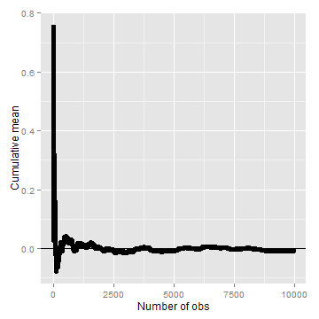
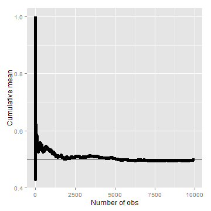
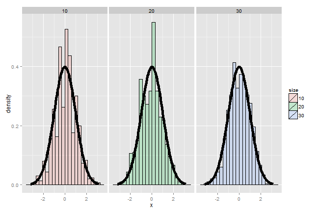
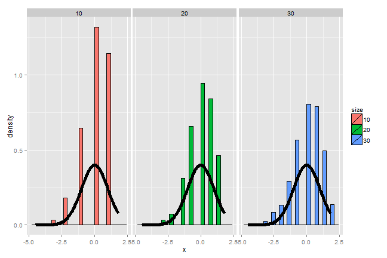
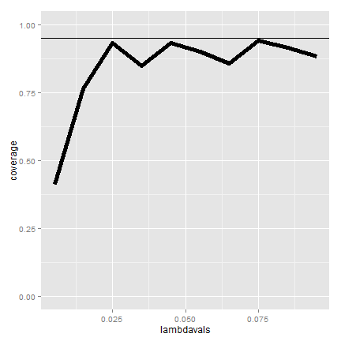
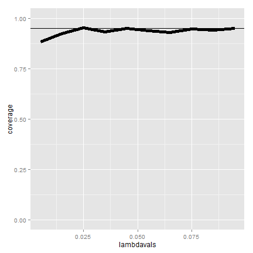

- Asymptotics is the term for the behavior of statistics as the sample size (or some other relevant quantity) limits to infinity (or some other relevant number)
- (Asymptopia is my name for the land of asymptotics, where everything works out well and there's no messes. The land of infinite data is nice that way.)
- Asymptotics are incredibly useful for simple statistical inference and approximations
- (Not covered in this class) Asymptotics often lead to nice understanding of procedures
- Asymptotics generally give no assurances about finite sample performance
- Asymptotics form the basis for frequency interpretation of probabilities (the long run proportion of times an event occurs)
A trip to Asymptopia
Statistical Inference
Brian Caffo, Jeff Leek, Roger Peng
Johns Hopkins Bloomberg School of Public Health
Asymptotics
Limits of random variables
- Fortunately, for the sample mean there's a set of powerful results
- These results allow us to talk about the large sample distribution of sample means of a collection of \(iid\) observations
- The first of these results we inuitively know
- It says that the average limits to what its estimating, the population mean
- It's called the Law of Large Numbers
- Example \(\bar X_n\) could be the average of the result of \(n\) coin flips (i.e. the sample proportion of heads)
- As we flip a fair coin over and over, it evetually converges to the true probability of a head The LLN forms the basis of frequency style thinking
Law of large numbers in action
n <- 10000
means <- cumsum(rnorm(n))/(1:n)
library(ggplot2)
g <- ggplot(data.frame(x = 1:n, y = means), aes(x = x, y = y))
g <- g + geom_hline(yintercept = 0) + geom_line(size = 2)
g <- g + labs(x = "Number of obs", y = "Cumulative mean")
g

Law of large numbers in action, coin flip
means <- cumsum(sample(0:1, n, replace = TRUE))/(1:n)
g <- ggplot(data.frame(x = 1:n, y = means), aes(x = x, y = y))
g <- g + geom_hline(yintercept = 0.5) + geom_line(size = 2)
g <- g + labs(x = "Number of obs", y = "Cumulative mean")
g

Discussion
- An estimator is consistent if it converges to what you want to estimate
- The LLN says that the sample mean of iid sample is consistent for the population mean
- Typically, good estimators are consistent; it's not too much to ask that if we go to the trouble of collecting an infinite amount of data that we get the right answer
- The sample variance and the sample standard deviation of iid random variables are consistent as well
The Central Limit Theorem
- The Central Limit Theorem (CLT) is one of the most important theorems in statistics
- For our purposes, the CLT states that the distribution of averages of iid variables (properly normalized) becomes that of a standard normal as the sample size increases
- The CLT applies in an endless variety of settings
- The result is that \[\frac{\bar X_n - \mu}{\sigma / \sqrt{n}}= \frac{\sqrt n (\bar X_n - \mu)}{\sigma} = \frac{\mbox{Estimate} - \mbox{Mean of estimate}}{\mbox{Std. Err. of estimate}}\] has a distribution like that of a standard normal for large \(n\).
- (Replacing the standard error by its estimated value doesn't change the CLT)
- The useful way to think about the CLT is that \(\bar X_n\) is approximately \(N(\mu, \sigma^2 / n)\)
Example
- Simulate a standard normal random variable by rolling \(n\) (six sided)
- Let \(X_i\) be the outcome for die \(i\)
- Then note that \(\mu = E[X_i] = 3.5\)
- \(Var(X_i) = 2.92\)
- SE \(\sqrt{2.92 / n} = 1.71 / \sqrt{n}\)
- Lets roll \(n\) dice, take their mean, subtract off 3.5, and divide by \(1.71 / \sqrt{n}\) and repeat this over and over
Result of our die rolling experiment

Coin CLT
- Let \(X_i\) be the \(0\) or \(1\) result of the \(i^{th}\) flip of a possibly unfair coin
- The sample proportion, say \(\hat p\), is the average of the coin flips
- \(E[X_i] = p\) and \(Var(X_i) = p(1-p)\)
- Standard error of the mean is \(\sqrt{p(1-p)/n}\)
- Then \[ \frac{\hat p - p}{\sqrt{p(1-p)/n}} \] will be approximately normally distributed
- Let's flip a coin \(n\) times, take the sample proportion of heads, subtract off .5 and multiply the result by \(2 \sqrt{n}\) (divide by \(1/(2 \sqrt{n})\))
Simulation results

Simulation results, \(p = 0.9\)

Galton's quincunx
_-_Galton_1889_diagram.png){kind=link}
Confidence intervals
- According to the CLT, the sample mean, \(\bar X\), is approximately normal with mean \(\mu\) and sd \(\sigma / \sqrt{n}\)
- \(\mu + 2 \sigma /\sqrt{n}\) is pretty far out in the tail (only 2.5% of a normal being larger than 2 sds in the tail)
- Similarly, \(\mu - 2 \sigma /\sqrt{n}\) is pretty far in the left tail (only 2.5% chance of a normal being smaller than 2 sds in the tail)
- So the probability \(\bar X\) is bigger than \(\mu + 2 \sigma / \sqrt{n}\)
or smaller than \(\mu - 2 \sigma / \sqrt{n}\) is 5%
- Or equivalently, the probability of being between these limits is 95%
- The quantity \(\bar X \pm 2 \sigma /\sqrt{n}\) is called a 95% interval for \(\mu\)
- The 95% refers to the fact that if one were to repeatly get samples of size \(n\), about 95% of the intervals obtained would contain \(\mu\)
- The 97.5th quantile is 1.96 (so I rounded to 2 above)
- 90% interval you want (100 - 90) / 2 = 5% in each tail
- So you want the 95th percentile (1.645)
Give a confidence interval for the average height of sons
in Galton's data
library(UsingR)
data(father.son)
x <- father.son$sheight
(mean(x) + c(-1, 1) * qnorm(0.975) * sd(x)/sqrt(length(x)))/12
## [1] 5.710 5.738
Sample proportions
- In the event that each \(X_i\) is \(0\) or \(1\) with common success probability \(p\) then \(\sigma^2 = p(1 - p)\)
- The interval takes the form \[ \hat p \pm z_{1 - \alpha/2} \sqrt{\frac{p(1 - p)}{n}} \]
- Replacing \(p\) by \(\hat p\) in the standard error results in what is called a Wald confidence interval for \(p\)
- For 95% intervals \[\hat p \pm \frac{1}{\sqrt{n}}\] is a quick CI estimate for \(p\)
Example
- Your campaign advisor told you that in a random sample of 100 likely voters,
56 intent to vote for you.
- Can you relax? Do you have this race in the bag?
- Without access to a computer or calculator, how precise is this estimate?
1/sqrt(100)=0.1so a back of the envelope calculation gives an approximate 95% interval of(0.46, 0.66)- Not enough for you to relax, better go do more campaigning!
- Rough guidelines, 100 for 1 decimal place, 10,000 for 2, 1,000,000 for 3.
round(1/sqrt(10^(1:6)), 3)
## [1] 0.316 0.100 0.032 0.010 0.003 0.001
Binomial interval
0.56 + c(-1, 1) * qnorm(0.975) * sqrt(0.56 * 0.44/100)
## [1] 0.4627 0.6573
binom.test(56, 100)$conf.int
## [1] 0.4572 0.6592
## attr(,"conf.level")
## [1] 0.95
Simulation
n <- 20
pvals <- seq(0.1, 0.9, by = 0.05)
nosim <- 1000
coverage <- sapply(pvals, function(p) {
phats <- rbinom(nosim, prob = p, size = n)/n
ll <- phats - qnorm(0.975) * sqrt(phats * (1 - phats)/n)
ul <- phats + qnorm(0.975) * sqrt(phats * (1 - phats)/n)
mean(ll < p & ul > p)
})
Plot of the results (not so good)
What's happening?
- \(n\) isn't large enough for the CLT to be applicable for many of the values of \(p\)
- Quick fix, form the interval with \[ \frac{X + 2}{n + 4} \]
- (Add two successes and failures, Agresti/Coull interval)
Simulation
First let's show that coverage gets better with \(n\)
n <- 100
pvals <- seq(0.1, 0.9, by = 0.05)
nosim <- 1000
coverage2 <- sapply(pvals, function(p) {
phats <- rbinom(nosim, prob = p, size = n)/n
ll <- phats - qnorm(0.975) * sqrt(phats * (1 - phats)/n)
ul <- phats + qnorm(0.975) * sqrt(phats * (1 - phats)/n)
mean(ll < p & ul > p)
})
Plot of coverage for \(n=100\)
Simulation
Now let's look at \(n=20\) but adding 2 successes and failures
n <- 20
pvals <- seq(0.1, 0.9, by = 0.05)
nosim <- 1000
coverage <- sapply(pvals, function(p) {
phats <- (rbinom(nosim, prob = p, size = n) + 2)/(n + 4)
ll <- phats - qnorm(0.975) * sqrt(phats * (1 - phats)/n)
ul <- phats + qnorm(0.975) * sqrt(phats * (1 - phats)/n)
mean(ll < p & ul > p)
})
Adding 2 successes and 2 failures
(It's a little conservative)
Poisson interval
- A nuclear pump failed 5 times out of 94.32 days, give a 95% confidence interval for the failure rate per day?
- \(X \sim Poisson(\lambda t)\).
- Estimate \(\hat \lambda = X/t\)
- \(Var(\hat \lambda) = \lambda / t\)
- \(\hat \lambda / t\) is our variance estimate
R code
x <- 5
t <- 94.32
lambda <- x/t
round(lambda + c(-1, 1) * qnorm(0.975) * sqrt(lambda/t), 3)
## [1] 0.007 0.099
poisson.test(x, T = 94.32)$conf
## [1] 0.01721 0.12371
## attr(,"conf.level")
## [1] 0.95
Simulating the Poisson coverage rate
Let's see how this interval performs for lambda values near what we're estimating
lambdavals <- seq(0.005, 0.1, by = 0.01)
nosim <- 1000
t <- 100
coverage <- sapply(lambdavals, function(lambda) {
lhats <- rpois(nosim, lambda = lambda * t)/t
ll <- lhats - qnorm(0.975) * sqrt(lhats/t)
ul <- lhats + qnorm(0.975) * sqrt(lhats/t)
mean(ll < lambda & ul > lambda)
})
Covarage
(Gets really bad for small values of lambda) 
What if we increase t to 1000?

Summary
- The LLN states that averages of iid samples converge to the population means that they are estimating
- The CLT states that averages are approximately normal, with
distributions
- centered at the population mean
- with standard deviation equal to the standard error of the mean
- CLT gives no guarantee that \(n\) is large enough
- Taking the mean and adding and subtracting the relevant
normal quantile times the SE yields a confidence interval for the mean
- Adding and subtracting 2 SEs works for 95% intervals
- Confidence intervals get wider as the coverage increases (why?)
- Confidence intervals get narrower with less variability or larger sample sizes
- The Poisson and binomial case have exact intervals that
don't require the CLT
- But a quick fix for small sample size binomial calculations is to add 2 successes and failures